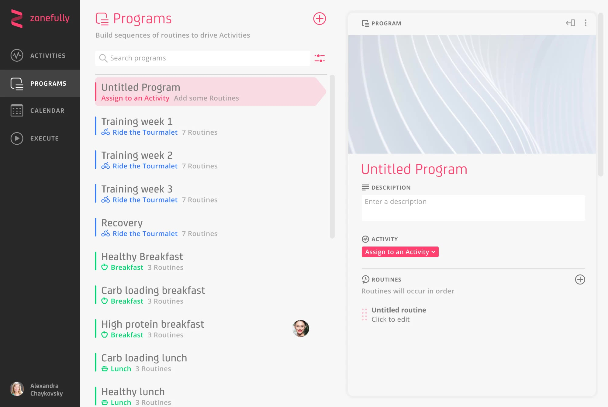

Interaction designVisual design
Problem
Connecting the bigger goal to the next action
Zonefully’s founder had developed a conceptual model for connecting long-term goals with recurring activities. He brought me in to turn that model into a usable interface.
Activities represented the things people wanted to plan and track. Programmes grouped Routines into sequences, which could then be applied to a calendar.
For a cycling goal, that could mean training and recovery programmes containing individual rides and rest days. The design challenge was to make that hierarchy usable: people needed to work on an individual routine, understand how it fitted into a programme, and see where it belonged in their calendar.

Approach
Making the structure visible
I worked within the founder’s conceptual model, focusing on how people would navigate between its different levels. Programme lists, routine lists and detail views followed a consistent visual structure.
A spacious layout separated the main areas of the interface. Activity colours, selection highlights and breadcrumb labels reinforced the connections between goals, programmes and routines.

Key decisions
Keeping context alongside the detail
I used connected, expanding cards to keep programmes and routines visible together. Selecting a programme revealed its routines; opening a routine showed its details alongside the programme it belonged to.
This prioritised context: each step into the detail retained a visible connection to the wider plan. Activity colours, selection highlights and breadcrumbs reinforced that relationship.

Creation states made the next steps explicit. Prompts such as “Assign to an Activity” and “Add some Routines” guided the setup of a new programme. Contextual controls grouped actions such as setting a cover image, duplicating and deleting.
Implementation
Developing the interface
I developed designs for programme browsing, routine details and new-programme creation, including selection and hover states. I also explored variations in cover imagery and action placement to balance functionality with a spacious layout.

Outcome
From a conceptual model to a working interface
Across roughly ten days of design work, I translated the founder’s model into the navigation, editing states and visual language for a functioning first version. The result connected programme planning, routine editing and calendar scheduling through a consistent interface.
The central design contribution was making the relationships between those levels visible. A routine could be edited alongside its programme, while the planner kept its activity and programme in view. These connections addressed the original challenge: working on the next action without losing the larger plan.